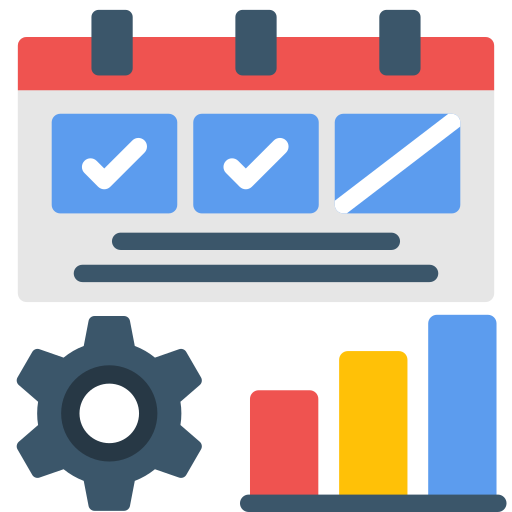

Site
Project Portal
Quick links to my main site and A4 documents. Use these cards to jump directly to the deliverables.
Portal Links

Docs

GenAI Acknowledgement
GenAI Acknowledgement
- How AI assisted (coding help, UI polish).
- Limits, risks, and final accountability.
- Alignment with WCAG 2.2 & integrity.
Docs

Implementation Rationale
Implementation Rationale
- Design tokens & component reuse.
- Accessibility & performance trade-offs.
- API modules (GET/POST) & error handling.